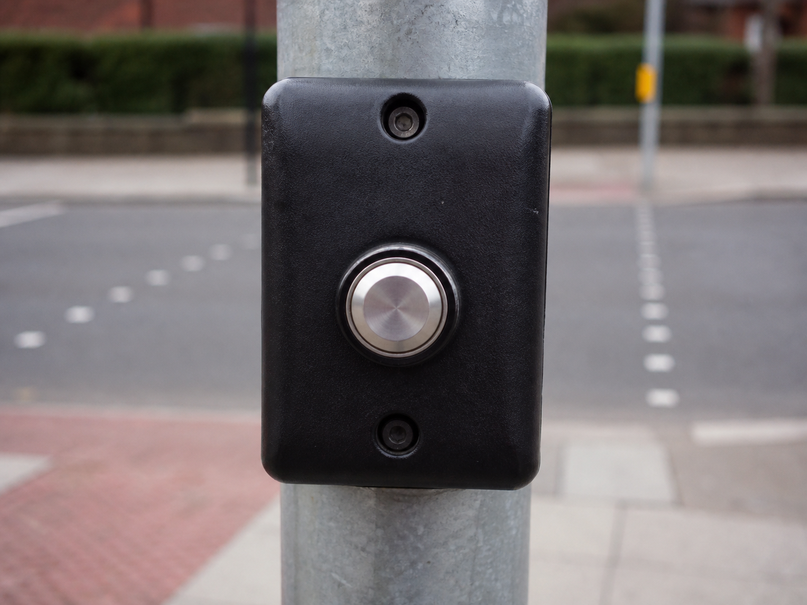
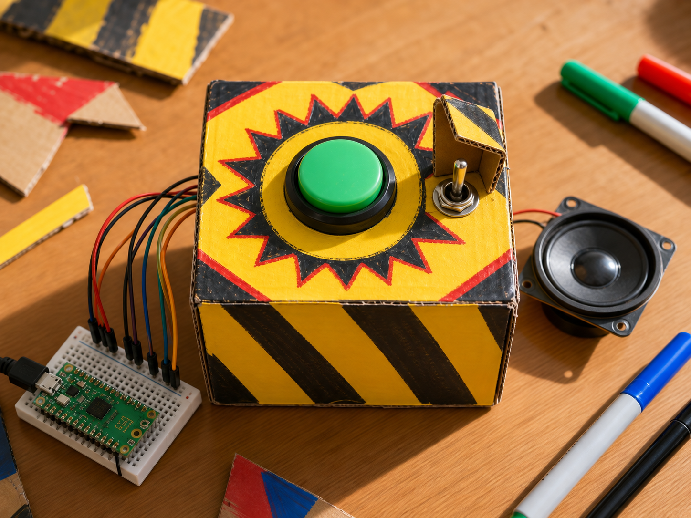

Pedestrian crossing
DetectButton and traffic phase
DecideIs it safe to cross?
DoChange the lights
A button lets someone tell your program to do something the moment they press.
Inside are two metal contacts. Pressing pushes them together so electricity can flow, and letting go springs them apart again.
Your projects can use it to start something, stop something, or count how many times it has been pressed.


from gpiozero import Button
button = Button(24)
pressed = button.is_pressedfrom picozero import Button
button = Button(16)
pressed = button.is_pressedpressed is True or False. No resistor is needed — both libraries switch on the pin's own pull-up. Also button.when_pressed and button.when_released.